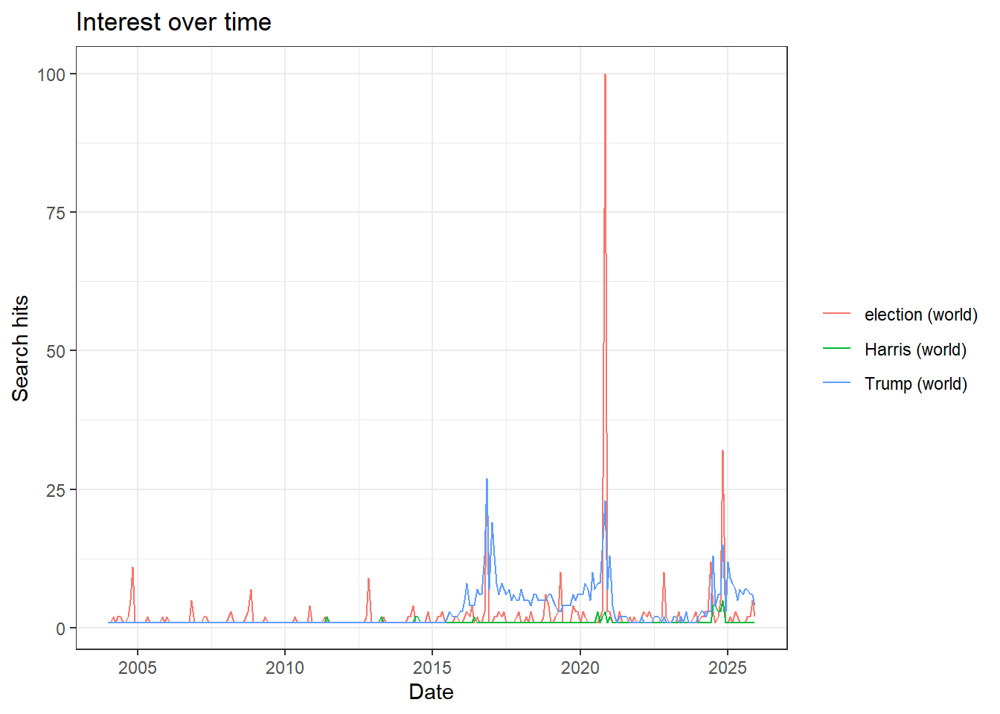
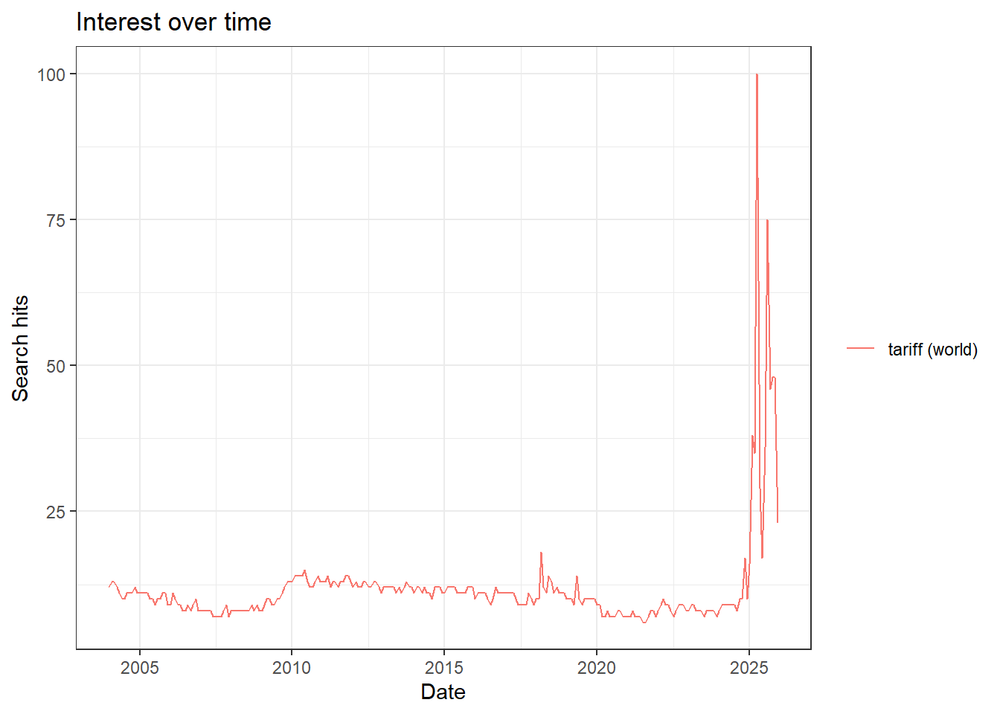
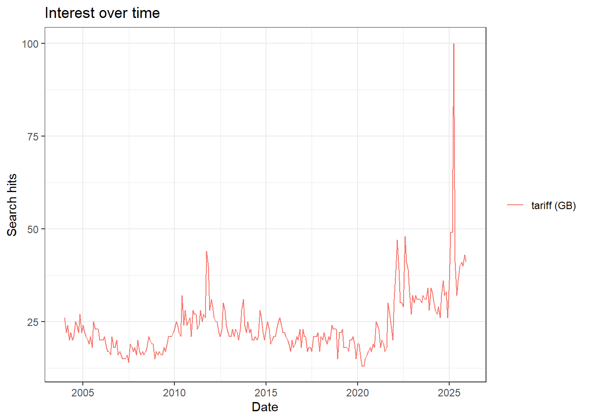
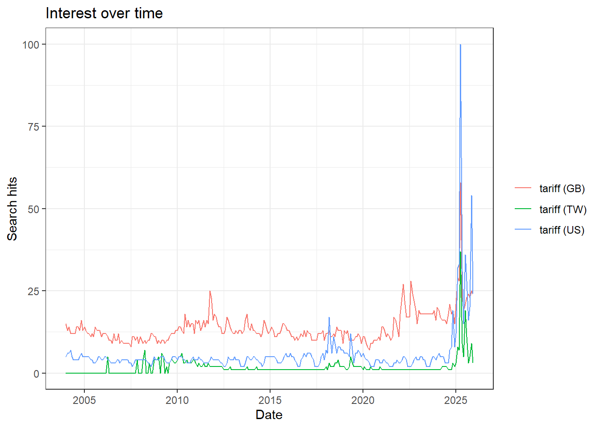
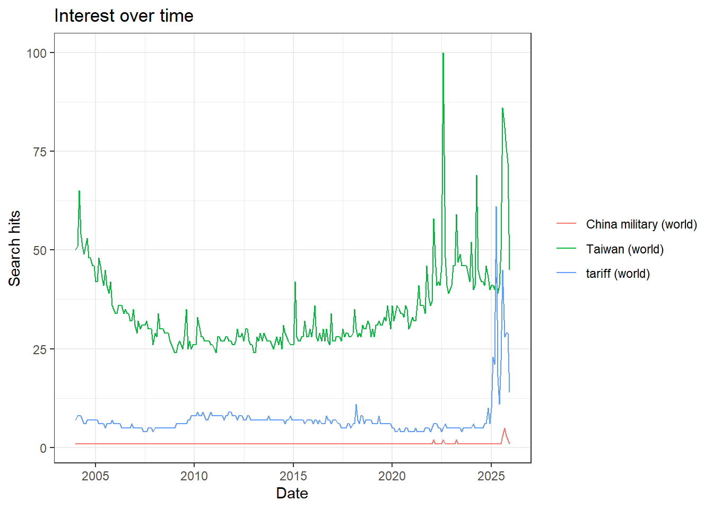
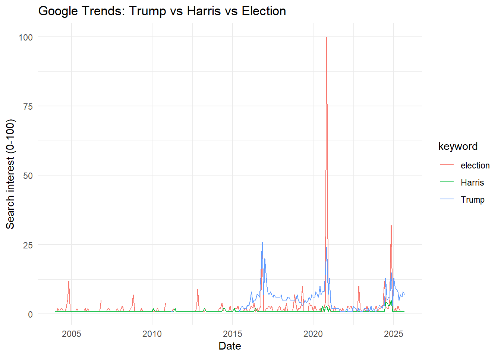

a. Use Google Trends website (https://trends.google.com/home) to:
i. Search Trump, Kamala Harris, and Election
Search “Trump”, “Harris”, and “election” on Google Trend website in (See bellowed plot).
ii. Download the data
Download the Google Trend data in csv file.
1. Analyze the data
a. Dates
library(readxl)library(dplyr)library(stringr)library(zoo) # as.yearmon() converts "YYYY-MM" to month-year date format# 1) Read file: skip the first two header/description rowsraw <-read_excel("TrumpHarrisElection_download.xlsx",sheet ="TrumpHarrisElection", skip =2, col_names =FALSE)names(raw) <-c("date","Trump","Harris","election")# 2) Clean data: keep only rows matching YYYY-MM format, handle "<1" valuesdf <- raw %>%mutate(date =str_trim(as.character(date))) %>%# trim whitespace, ensure string typefilter(str_detect(date, "^\\d{4}-\\d{2}$")) %>%# keep only YYYY-MM formatmutate(# Convert YYYY-MM to the first day of each month (Date type)date =as.Date(as.yearmon(date)),# Replace "<1" with 0, then convert to numericacross(c(Trump, Harris, election), ~as.numeric(str_replace(.x, "<1", "0"))) ) %>%arrange(date)# 3) Get start and end datesstart_date <-min(df$date)end_date <-max(df$date)start_date; end_date
[1] "2004-01-01"
[1] "2025-09-01"
The time range of the dataset is from 2004-01-01 to 2025-09-01.
b. Intervals
# 4) Time interval (in days), verify if data is monthlygap_days <-diff(df$date)summary(gap_days)
Time differences in days
Min. 1st Qu. Median Mean 3rd Qu. Max.
28.00 30.00 31.00 30.44 31.00 31.00
# Alternatively, check intervals in monthsgap_months <-diff(as.yearmon(df$date)) *12summary(gap_months)
Min. 1st Qu. Median Mean 3rd Qu. Max.
1 1 1 1 1 1
The data are collected on a monthly basis, with most intervals being 30 or 31 days.
The summary shows that the minimum interval is 28 days and the maximum is 31 days, which corresponds to the varying number of days in each month.
b. Use gtrendsR package to collect data (use gtrendsR01.R program)
Searching “Trump”,“Harris”, & “election” on Google Trends
#install.packages("gtrendsR")library(gtrendsR)# ---- Query "Trump", "Harris", "election" (all time, all locations) -----TrumpHarrisElection =gtrends(c("Trump","Harris","election"), time ="all") # Query "Trump", "Harris", and "election" on Google Trends (all time, all locations), store data in TrumpHarrisElectionplot(TrumpHarrisElection) # Plot the data stored in TrumpHarrisElection

Searching “tariff” on Google Trends
# ---- Query "tariff" (all time, all locations) -----plot(gtrends(c("tariff"), time ="all")) # Plot Google Trends data for "tariff" (all time, all locations)

# ---- Query "tariff" (all time, specific locations) -----data("countries") # Load Google Trends country codesplot(gtrends(c("tariff"), geo ="GB", time ="all")) # Plot Google Trends data for "tariff" in UK (all time)

plot(gtrends(c("tariff"), geo =c("US","GB","TW"), time ="all")) # Plot Google Trends data for "tariff" in US, UK, Taiwan (all time)

# ---- Query "tariff", "China military", "Taiwan" (all time, all locations) -----plot(gtrends(c("tariff","China military", "Taiwan"), time ="all")) # Plot Google Trends data for "tariff", "China military", and "Taiwan" (all time, all locations)

# ---- Query "tariff", "China military", "Taiwan" - additional code -----tct =gtrends(c("tariff","China military", "Taiwan"), time ="all") # Query Google Trends for "tariff", "China military", and "Taiwan" (all time, all locations), store data in tcttct =data.frame(tct$interest_over_time) # Extract the interest_over_time table from tct list; convert to data.frame format, overwriting the original tct
# ---- Supplementary code -----par(family="Georgia") # Set chart font to Georgiatg =gtrends("tariff", time ="all") # Query Google Trends for "tariff" (all time), store data in tgtg_iot = tg$interest_over_time # Extract the "interest over time" time series data and store in tg_iotdata("categories") # Load Google Trends category names (e.g., Health)
c. Save the data into csv and R formats.
Save the data into csv
# This code is displayed but not executed# Extract interest_over_time (search interest time series data)TrumpHarrisElection_iot <- TrumpHarrisElection$interest_over_time# Save as CSV filewrite.csv(TrumpHarrisElection_iot, "TrumpHarrisElection.csv", row.names =FALSE)
Save the data into R formats
# This code is displayed but not executed# Save in RData formatsave(TrumpHarrisElection_iot, file ="TrumpHarrisElection.RData")# Or use RDS (more commonly used)saveRDS(TrumpHarrisElection_iot, "TrumpHarrisElection.rds")
range(TrumpHarrisElection_csv$date) # Start and end dates
[1] "2004-01-01" "2025-09-01"
The time range of the dataset is from 2004-01-01 to 2025-09-01.
Check intervals
# Ensure date is in datetime formatTrumpHarrisElection_csv$date <-as.POSIXct(TrumpHarrisElection_csv$date)# Extract unique dates only, sorted in ascending orderuniq_dt <-sort(unique(TrumpHarrisElection_csv$date))# Calculate intervals between consecutive dates (in days)gap_days <-as.numeric(diff(uniq_dt), units ="days")summary(gap_days)
Min. 1st Qu. Median Mean 3rd Qu. Max.
28.00 30.00 31.00 30.44 31.00 31.04
This indicates that the dataset is collected on a monthly basis, where the number of days per interval depends on the calendar month (28, 30, or 31 days).
View each keyword trend
table(TrumpHarrisElection_csv$keyword) # Count of records for each keyword
election Harris Trump
261 261 261
Each keyword (Trump, Harris, and election) has 261 observations in the dataset.
Illustrate the comparison of three keywords
library(ggplot2)ggplot(TrumpHarrisElection_csv, aes(x = date, y =as.numeric(hits), color = keyword)) +geom_line() +labs(title ="Google Trends: Trump vs Harris vs Election",x ="Date", y ="Search interest (0-100)") +theme_minimal()
Warning in FUN(X[[i]], ...): NAs introduced by coercion
Warning: Removed 3 rows containing missing values or values outside the scale range
(`geom_line()`).

d. What are the differences between the two methods?
Download data manually
Use ‘gtrendsR’ script
Time interval
Select “Past Day”; data may be hourly or every 8 minutes. Select “All Time”, data is usually monthly (YYYY-MM).
Freely specify time = “today 1-m”, “today 12-m”, “all”, or other date ranges.
Geography
Manually switch to a single region (e.g., Global, US).
Set geo directly in the code as “US”, “TW”, “GB”. Compare multiple countries at once.
Data structure
The downloaded CSV file only has a few columns, such as “Time” and “Search Popularity for Each Keyword”.
Return a list containing multiple data frames:
• $interest_over_time (time series)
• $interest_by_region (search volume by region)
• $related_queries (related search queries)
• $related_topics (Related Topics)
Advantages
Easy to use, ideal for quickly checking trends or making basic comparisons.
Integrate processes (automated analysis, archiving, plotting) in R for easy reproducibility and sharing.
Limitations
Requires manual operation and cannot be automatically updated or processed in batches.
May encounter Google Trends API rate limits (429 error). If called too frequently, may be temporarily blocked.